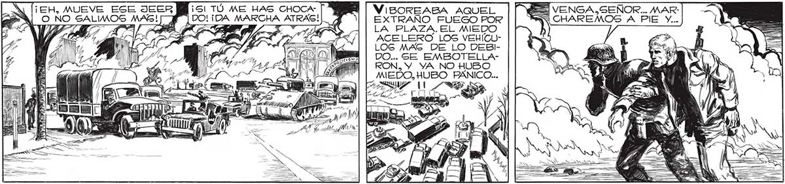

¡UN MINUTO MAS Y TODA LA PLAZA GERA UNA HOGUERA! ¡VAMOG, SEÑOR ! ¡DEBEMOS IRNOS! QuiZzX YO HABÍA LLEGADO AL BORDE DE LA RESIGTENCIA. HABA VIGTO TANTA MUER- | TE EN TAN POCO TIEMPO, QUE ME CREÍA HECHO A TODO. PERO LO DE FAVALLI ERA DIFERENTE.COLMABA LA MEDIDA ... ¡EH, MUEVE ESE JEER Mis! TÚ ME HAS CHOCA | VIBOREABA AQUEL VENGA.SEÑOR... MARO NO SALIMOS MAS! Bf” [DO!¡DA MARCHA ATRAS!| , EXTRANO FUEGO POR CHAREMOS A Pl y - 7 LA PLAZA. EL MEDO ' ACELERO LOS VEHICULOG MAG DE LO DEBIDO... SE EMBOTELLAq tala ¿il e A Os = y mb) 7 AC DAMUE MAR sá _—. => > ¡JUAN! ¡JUAN! ¡NO ME DEJES!] E > ¡ES FAVA! ¡ESTA VIVO TODAVÍA! — E a == > S ] AN ÓN y E EY A SS NI YN pa y 5] E Y 199
